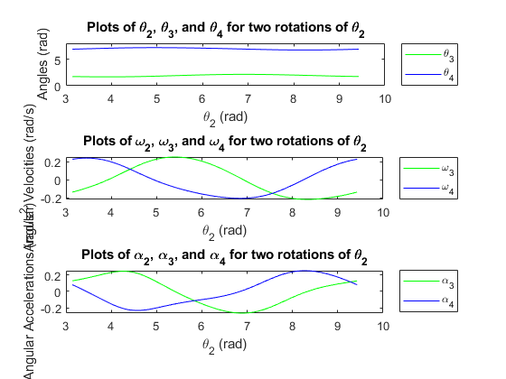
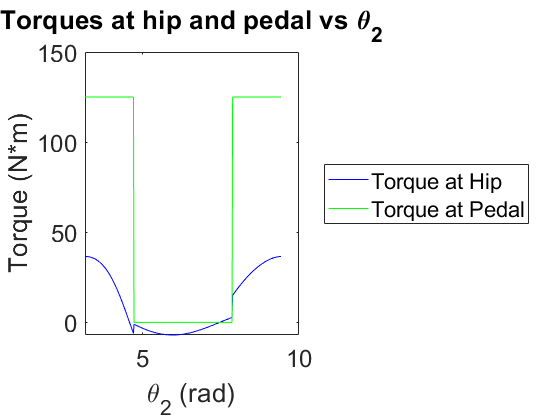
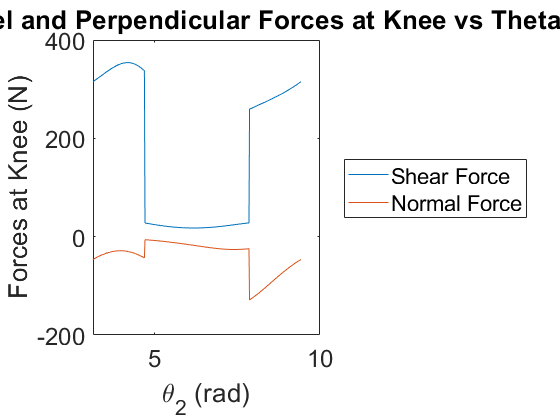

Contents
Bicycle Motion Analysis
Robert Kobrin, Audrey Biller, Macie Benge, Robert Samaskeawicz rlkobrin@ncsu.edu 2/23/2022 BikeProjectTest.m
clear
clc
close all
Declarations
Define four bar lengths (meters)
r1 = .76; % Frame length (m) r2 = 0.1; % Pedal length (m) r3 = 0.4572; % Lower leg length of Robert S (m) r4 = 0.4826; % Thigh length of Robert S (m) % Define input bar's initial angle, omega, and alpha th1init = (73)*(pi/180); %Initial theta 1 angle (degrees) th2init = pi; %Initial theta 2 angle (radians) thfinal = 3*pi; %Final theta 2 angle (radians) om2init = 1; %Initial omega (rad/s) al2 = 0; %Initial alpha (rad/s^2) % Variables mass = 100; %Mass of human (kg) g = -9.8; %gravity m/s^2 Tdown = 125; %Torque when pushing down (N*m) Tup = 0; %Torque when pushing up (N*m) % Mass of components m1 = 1.25; %Frame, value found online m2 = 0.3; %Pedal, value found online m3 = mass*0.0465; %Lower Leg m4 = mass*0.1; %Thigh % Force of gravity Fg2y = g*m2; Fg3y = g*m3; Fg4y = g*m4; % Moments of inertia I1 = 1/12 * m1 * r1^2; %MoI for link 1 (Frame) I2 = 1/12 * m2 * r2^2; %MoI for link 2 (Pedal) I3 = m3*(r3*0.302)^2; %MoI for link 3(Lower Leg) I4 = m4*(r4*0.323)^2; %MoI for link 4 (Thigh) % Guess for fsolve guess = [pi (3*pi)/2 0 0 0 0]; % Angle Array angArray = th2init:(pi/180):thfinal; om2 = []; % Plot vidObj.FrameRate = 10; % Anthropometric Table Values legDist = 0.567; legProx = 0.433; thighDist = 0.567; thighProx = 0.433;
Calculations
options = optimoptions('fsolve','Display','off','MaxIter',10000,... 'MaxFunEvals',50000,'TolFun',1e-10); vidObj = VideoWriter('Cycling.avi'); open(vidObj) for k = 1:length(angArray)
th2 = angArray(k);
om2(k) = sqrt(om2init^2 + 2*al2*(th2-th2init));
answers = fsolve(@fourbar_proj,guess,options,r1,r2,r3,r4,th1init,th2,om2(k),al2);
guess = answers;
th3(k) = answers(1);
th4(k) = answers(2);
om3(k) = answers(3);
om4(k) = answers(4);
al3(k) = answers(5);
al4(k) = answers(6);
%r vectors
r12x(k) = (-r2/2)*cos(th2);
r12y(k) = (-r2/2)*sin(th2);
r32x(k) = (r2/2)*cos(th2);
r32y(k) = (r2/2)*sin(th2);
r23x = (-r3*legDist)*cos(th3);
r23y = (-r3*legDist)*sin(th3);
r43x = (r3*legProx)*cos(th3);
r43y = (r3*legProx)*sin(th3);
r34x = (-r4*thighDist)*cos(th4);
r34y = (-r4*thighDist)*sin(th4);
r14x = (r4*thighProx)*cos(th4);
r14y = (r4*thighProx)*sin(th4);
% Solving for linear accelerations
acm2x = -al2.*(r2/2).*sin(th2) - om2.^2 .* (r2/2).*cos(th2);
acm2y = al2.*(r2/2).*cos(th2) - om2.^2 .* (r2/2).*sin(th2);
acm3x = -al2.*r2.*sin(th2) - om2.^2 .*r2.*cos(th2) -al3.*(r3*legDist).*sin(th3) - om3.^2 .* (r3*legDist).*cos(th3);
acm3y = al2.*r2.*cos(th2) - om2.^2 .* r2.*sin(th2) + al3.*(r3*legDist).*cos(th3) - om3.^2 .*(r3*legDist).*sin(th3);
acm4x = -al2.*r2.*sin(th2) - om2.^2 *r2.*cos(th2) -al3.*r3.*sin(th3) - om3.^2 .*r3.*cos(th3) - al4.*(r4*thighDist).*sin(th4) - om4.^2 .* (r4*thighDist).*cos(th4);
acm4y = al2.*r2.*cos(th2) - om2.^2 .* r2.*sin(th2) + al3.*r3.*cos(th3) - om3.^2 .* r3.*sin(th3) + al4.*(r4*thighDist).*cos(th4) - om4.^2 .* (r4*thighDist).*sin(th4);
if (th2 >=(3*pi)/2) && (th2 <= (5*pi)/2)
Tdown = 0;
else
Tdown = 125;
end
Tpedal(k) = Tdown;
% F12x F12y F32x F32y F23x F23y F43x F43y F34x F34y F14x F14y T4
A = [1 0 1 0 0 0 0 0 0 0 0 0 0;
0 1 0 1 0 0 0 0 0 0 0 0 0;
-r12y(k) r32x(k) -r32y(k) r12x(k) 0 0 0 0 0 0 0 0 1;
0 0 0 0 1 0 1 0 0 0 0 0 0;
0 0 0 0 0 1 0 1 0 0 0 0 0;
0 0 0 0 -r23y(k) r23x(k) -r43y(k) r43x(k) 0 0 0 0 0;
0 0 0 0 0 0 0 0 1 0 1 0 0;
0 0 0 0 0 0 0 0 0 1 0 1 0;
0 0 0 0 0 0 0 0 -r34y(k) r34x(k) -r14y(k) r14x(k) 0;
0 0 1 0 1 0 0 0 0 0 0 0 0;
0 0 0 1 0 1 0 0 0 0 0 0 0;
0 0 0 0 0 0 1 0 1 0 0 0 0;
0 0 0 0 0 0 0 1 0 1 0 0 0];
b = [(m2*acm2x(k)) (m2*acm2y(k) - m2*g) (I2*al2) (m3*acm3x(k)) (m3*acm3y(k) -m3*g) (I3*al3(k)) (m4*acm4x(k)) (m4*acm4y(k)-m4*g) (I4*al4(k)-Tdown) 0 0 0 0]';
F = A\b;
YForce(k) = F(10);
XForce(k) = F(9);
%Fpar = XForce(k).*cos(th4) + YForce(k).*sin(th4); %force parallel to thigh
%Fperp = YForce(k).*cos(th4) - XForce(k).*sin(th4); %force perpendicular to thigh
Fpar = YForce.*sin(90-th4);
Fperp = XForce.*cos(th4);
THip(k) = F(13);
% Joint locations
j1x(k) = r1*cos(th1init); %X position of joint 1 coordinate
j1y(k) = r1*sin(th1init); %Y position of joint 1 coordinate
j2x(k) = 0; %X position of joint 2 coordinate
j2y(k) = 0; %Y position of joint 2 coordinate
j3x(k) = r32x(k)-r12x(k);
j3y(k) = r32y(k) - r12y(k);
j4x(k) = j3x(k) + r3*cos(th3(k));
j4y(k) = j3y(k) + r3*sin(th3(k));
lengthR2(k) = sqrt((j2x(k)-j3x(k))^2 + (j2y(k)-j3y(k))^2);
lengthR3(k) = sqrt((j4x(k)-j3x(k))^2 + (j4y(k)-j3y(k))^2);
lengthR4(k) = sqrt((j4x(k)-j1x(k))^2 + (j4y(k)-j1y(k))^2);
Animated Rotation Plot
%figure(1) %currentFrame=getframe(gcf); %writeVideo(vidObj,currentFrame); % plot([j1x(k) j2x(k)], [j1y(k) j2y(k)], 'r',... % [j2x(k) j3x(k)], [j2y(k) j3y(k)], 'b',... % [j3x(k) j4x(k)], [j3y(k) j4y(k)], 'g',... % [j4x(k) j1x(k)], [j4y(k) j1y(k)], 'k',... % j4x, j4y, 'm-' ,... % j1x(k), j1y(k), 'ro', j2x(k), j2y(k), 'bo', ... % j3x(k), j3y(k), 'go', j4x(k), j4y(k), 'ko', 'LineWidth', 2) % legend('Frame', 'Pedal', 'Leg', 'Thigh','Knee','Location','southeast') % xlim([-.5 .5]) % ylim([-.2 .8]) % xlabel('Horizontal Position (m)', 'Fontsize', 16) % ylabel('Vertical Position (m)', 'Fontsize', 16) % title('Pedaling System', 'Fontsize', 24) % set(gca, 'FontSize', 18) drawnow % forces figure to appear, which may not happen in loops
end
close(vidObj)
Warning: No video frames were written to this file. The file may be invalid.
Outputs
%Plots of angles,velocity,acceleration subplot(3,1,1) plot(angArray,th3,'g', angArray,th4,'b'); title('Plots of \theta_2, \theta_3, and \theta_4 for two rotations of \theta_2', 'Fontsize', 15); xlabel('\theta_2 (rad)', 'Fontsize', 10); ylabel('Angles (rad)', 'Fontsize', 8); ylim([0 8]) legend('\theta_3','\theta_4','Location','NortheastOutside'); set(gca, 'FontSize', 10) subplot(3,1,2) plot(angArray,om3,'g',angArray,om4,'b'); title('Plots of \omega_2, \omega_3, and \omega_4 for two rotations of \theta_2', 'Fontsize', 15); xlabel('\theta_2 (rad)', 'Fontsize', 10); ylabel('Angular Velocities (rad/s)', 'Fontsize', 8); legend('\omega_3','\omega_4','Location','NortheastOutside'); set(gca, 'FontSize', 10) subplot(3,1,3) plot(angArray,al3,'g',angArray,al4,'b'); title('Plots of \alpha_2, \alpha_3, and \alpha_4 for two rotations of \theta_2', 'Fontsize', 15); xlabel('\theta_2 (rad)', 'Fontsize', 10); ylabel('Angular Accelerations (rad/s^2)', 'Fontsize', 8); legend('\alpha_3','\alpha_4','Location','NortheastOutside'); set(gca, 'FontSize', 10) %Plot of torque at hip and pedal vs theta2 figure plot(angArray,THip,'b', angArray,Tpedal,'g') title('Torques at hip and pedal vs \theta_2', 'Fontsize', 20) xlabel('\theta_2 (rad)', 'Fontsize', 13) ylabel('Torque (N*m)', 'Fontsize', 13) legend('Torque at Hip','Torque at Pedal','Location','EastOutside'); set(gca, 'FontSize', 18) %Plot of forces vs Theta2 Angle figure plot(angArray,Fpar,'-',angArray,Fperp,'-'); title('Plot of Parallel and Perpendicular Forces at Knee vs Theta 2', 'Fontsize', 5); xlabel('\theta_2 (rad)', 'Fontsize', 13); ylabel('Forces at Knee (N)', 'Fontsize', 13); legend('Shear Force','Normal Force','Location','EastOutside') set(gca, 'FontSize', 18)  